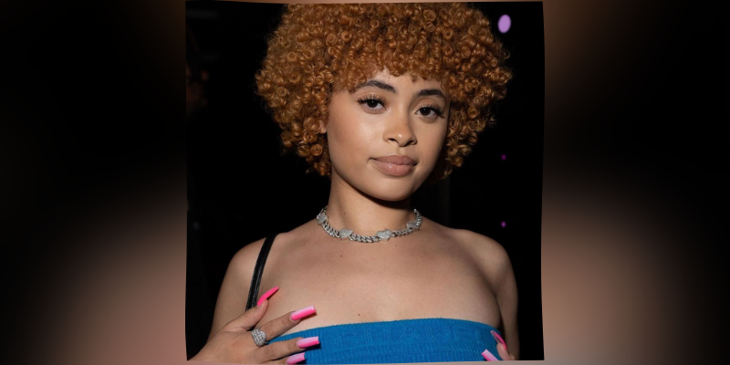

 About Cat Mother Behind the computer is a feline by the name of Jules, aliased as catfxngs. In this mind of such feline comes great projects such as Chao-Bot, a chao garden simulation bot who can also help you play music, various optimizations on Slop Crew, work on Heads Up as well as the esteemed creator of the Noni Bot. When asked about an interview, Miss Cat Mother said, on quote, are you telling me a shrimp fried this rice
A fantastic cat, she knows how to use a computer and bad bitch pronouns